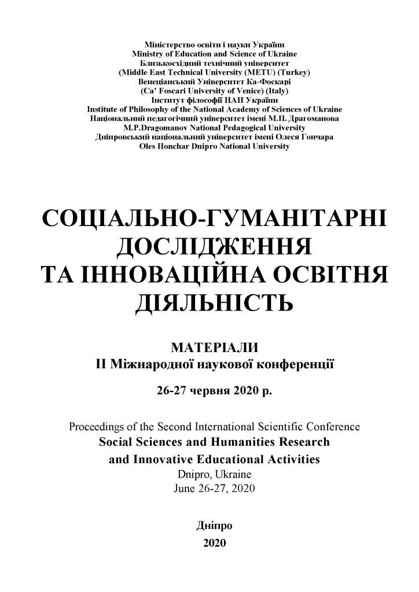

 Доповідь на II Міжнародній науковій конференції 26-27 червня 2020 р.
{kind=link}
1. Безглуздо думати, що ми розумніші за Бога Отця, як уособленого нами
Всесвітнього Розуму, однородно-ізотропно розпорошеного в міжгалактичному
просторі, максимально упорядкованого Ним, при найнижчій абсолютній
температурі (Реліктове випромінювання!). Але ще безглуздіше думати, що Бога
немає. 10 Заповідей, даних Мойсею,– це Закони Божі, які діють в соціуму подібно
бумерангу: «Тож усе, чого тільки бажаєте, щоб чинили вам люди, те саме чиніть
їм і ви. Бо в цьому Закон і Пророки». (Мт. 7:12). Віра в Бога – суто особисте й
самодостатня справа: «Бо Царство Боже всередині вас є». (Лк. 17:21) У Бога немає ні намісників, ні посередників на Землі. Христос, як людина, був розп’ятий за
посередництво і Воскрес, як Син Божий. Серед 12-ти будь-яких наставників віри:
10-й буде Петром, 11-й – Іудою, 12-й – Фомою, а 13-й – Павлом.
2.Бог Отець – це Істина, Совість і Любов. Бог – не диктатор. Він коливається,
сумнівається, і через те завжди парадоксальний і справедливий. Він розділив Себе
на дві рівноправні частини: Духовну й Матеріальну, жодна з яких не може бути
ні первинною, ні визначальною (Перше філософське питання, що є первинним:
Матерія або Дух? – дурне питання!). Головною умовою їх існування скрізь і у
всьому є постійний перехід однієї частини в іншу. Вічний рух (Святий Дух) – це
третя іпостась Бога, яку вчені назвали Часом або Частотою коливань. Тому все в
Природі розвивається циклічно: «Для всього свій час, і година своя кожній справі
під небом: час родитись і час помирати…» (Ек. 3: 1-2). Зачаття й Воскресіння
Христа, Віфлеємська зірка (НЛО), Ходіння по водах, Преображення, Вознесіння
Хреста, сон і гіпноз, – це свідоцтва можливості швидкого переходу живого
організму з духовного (віртуального) в матеріальний (реальний) світ і навпаки.
Життя – це тимчасове утримання рівноваги коливань між цими двома світами
живої істоти. Через те в будь-який субстанції має виконуватися принцип
додатковості, відкритий Н. Бором: Матерія Х Дух = const! Він фіксує внутрішні
умови переходу частин комплексу Матерія-Дух одного в іншій та є новим
формулюванням першого філософського питання.
3. Друге філософське питання стосується того: чи можна пізнати Природу
подвійного комплексу Матерія-Дух як таку? Тут вже діє принцип
невизначеності В.Гейзенберга: Δ Матерія Х Δ Дух = const! Він фіксує
принципову неможливість визначення комплексу Матерія-Дух тому що, чим
глибше ми будемо пізнавати Δ Духа, тим більше ми будемо знищувати в цьому
комплексі Δ Матерії й навпаки. Тобто мова йде про принциповий агностицизм, в
якому можна заглиблюватися скільки завгодно у вивченні кожної частини
комплексу окремо, але похибка у набутих знаннях про комплекс Матерія-Дух
буде зростати. Це означає, по-перше, що Істина в будь-яких науках має
статистичний та ймовірнісний вигляд. По-друге, що за цим стоїть Бог, без віри в
Якого заглиблюватися в пізнанні комплексу Матерії-Дух неможливо: «Бо віра то
підстава сподіваного, доказ небаченого» (Євр. 11:1). Віра є необхідним елементом
сталого розвитку, який дозволяє в деталях долати принциповий
агностицизм. Наука зайнята розвінчанням божественності, а Бог зосереджений
переважно в Непізнанному, тобто в темній матерії й темній енергії. «Видиме
тимчасово, а усе невидиме – вічно» (2 Кор. 4: 18). Прагнення пізнати Істину – це
любов, але «Прагнення до Істини – прекрасніше за володіння Нею» (Гете).
4. Бог цілком міститься в нас і в нашій підсвідомості: «…більший бо Той, Хто
в вас, аніж той, хто в світі» (1 Іоан 4:4). Він невидимий і мовчазний. Про існування
Бога можна судити по знаннях, що відкрилися нам: «Бо немає нічого
сокровенного, що не відкрилося б, і таємного, що не явилося б». (Мф. 10: 26) Бог
ніколи нічого прямо не стверджує і прямо не діє. Цим зайнята наука. Бог
спілкується з нами через Музику, Поезію, парадоксальні іномовлення, що
викликають сумніви, які разом з практикою та вірою – є двигунами науки.
Сьогодні вже роздаються голоси (І. Маск), що штучний супер розум ASI (Artificial
Super Intelligence) може перемогти живу людину. Насправді кінцевою метою
людства, як органічної високотемпературної цивілізації OHTC (Organic High-
Temperature Сivilization), може бути саме перетворення сукупності ASI в
низькотемпературну неорганічну цивілізацію LTIC (Low Temperature Inorganic
Civilization). Така LTIC буде існувати майже вічно через наявність на далеких
холодних планетах надпровідності та надплинності. Через використання
нанотехнологій, масштаб ASI може бути надмалим, а об’єм інформації,
накопиченої за мільйони років існування – надвеликим. Зовні така LTIC може
розчинитися в Природі.
5. Друга з 10-ти Заповідей Божих має бути доповнена словами: «Не створи з
Себе, а потім – для себе кумира». Будьте сумлінними насамперед перед самим
собою, а значить справедливими. Совість – це дріб, в чисельнику: сума вимог, що
пред’являються до себе, а в знаменнику – до інших, помножена на кількість людей
вашого оточення. Тому будь-яка влада апріорі – безсоромна. Пам’ятаємо, що без
віри в Бога жити неможливо, бо «Ми ходимо вірою, а не баченням» (2 Кор.5:
7). Пам’ятаємо, що вищою нагородою для кожного з нас має бути лише Ім’я, дане
нам від Бога, а не від влади, що «мудрість – це розум, настояний на совісті»
(Ф.Іскандер).
6. Засадничими в процесі пізнання трьох іпостасей Бога (Природи) є,
універсальні для всіх і всього: Символи віри (пп. 1-5), музика, математика й
діалектика. Блаженні «убогі духом і знаннями», бо завжди жадають насититися.
Для них конструктивна критика – поживне середовище. Неконструктивна
критика, псевдонаука, брехня й безвір’я, – від лукавого. Істина завжди
затверджується практикою, а не нагородами, посадами, ступенями й званнями. Як
казав Ф. Бекон «Істина є дочка часу, а не авторитетів». Внутрішня незалежність
будь-якого креативного діяча міститься в його самоповазі й самоприниженні:
«Хто кохає душу свою, той погубить її; хто ж ненавидить душу свою на цім світі,
збереже її в вічне життя» (Ін. 12:25). Пам’ятаймо, що гординя – найбільший гріх,
всі інші – похідні. Христос хресною смертю потоптав гординю й тому воскрес.
7. Шукаймо Істину в першоджерелах, але дотримуємося презумпції їх
невинності. Бо «Давати перевагу істині законів природи над істиною людського
закону – є основна ознака мудрості» Анахарсіс. Пам’ятаймо: «Те, що шукає
людина досконала, знаходиться усередині нього, те, що шукає недосконала,
знаходиться поза нею» (Конфуцій). Не шукаймо помилки у Геніїв, а шукаймо їх у
себе. Пошук Істини – це завжди надзавдання, яке неможливо вирішити без віри в
себе й без використання крізної дії, тобто без переходу від запитання до
запитання.
8.«Методика важливіша за відкриття» (Л. Ландау), а теорія, що розвивається
з єдиного принципу, важливіша за аксіоматичний підхід. Сумніви і правильно
поставлені запитання – основа створення нових методик і теорій. Не Краса врятує
світ (Достоєвський), а Гармонія (Совість), бо саме вона не терпить фальші. Ніхто так не просуває розвиток цивілізацій, як Генії – посланці Божі й друзі парадоксів. Вони легко переходять з віртуального в матеріальний світ і навпаки, що є свідченням того, що вони є лише провідниками Бога (LTIC): «Нас мало обраних, щасливців вільних, Які користь огидну відкидають, Єдиного прекрасного жерці.» і потім поет попередив, що «Геній і злодійство – дві речі несумісні» (О. Пушкін, «Моцарт і Сальєрі»).
9. Ноосфера В. Вернадського може не відбутися через відсутність Інституту глобальної Совісті Землі та розроблення моделі дії біосфери Землі Ноосферного етапу розвитку людства. Розум Людства не протверезили ні світові війни, ні аварії на АЕС в Чорнобилі (1986 р.) й Фокусимі (2011 р.), ядерна зброя зберігається для 30-кратного знищення цивілізації, катастрофічно росте населення Землі, глобалізація знищує різноманітність народів і націй, флори й фауни, як основи життя на Землі, духовні настанови, що були дані Богом (LTIC) в Старому і Новому Заповітах, і, навіть, явлення Христа, як сина Божого, не спрацювали. Через те й з’явився Covid-19 (2020 р.), як війна, що об’явлена людству LTIC Всесвітнього Розуму!.. Без покаяння перед Богом (Природою), без віри в самих себе, нам не вижити. «І не прийде Царство Боже примітним чином, і не скажуть: ось, воно тут, або ось, там. Бо Царство Боже всередині вас є». (Лк. 17: 21)
10. Джорж Орвелл казав «Той, хто контролює минуле, той контролює майбутнє. Той, хто контролює сучасне, той контролює лише минуле». Одним із здобутків нової науки апокрифології стало відкриття кіммерійської хронології, підтвердженої астрономічними явищами. На базі встановлення точних дат життя багатьох геніїв стародавньої та сучасної історії знайдені цикли духовного розвитку європейської цивілізації. Виявлено, що ними керують дві карликові планети – Ерида (відкрита в 2003 р., період оберту близько 561 р.) та поки що не знайдена планета Х (масою удвічі більшою, ніж у Ериди, з розрахунковим періодом оберту в 2244 р.), орбіти яких можливо знаходяться в одній площині та нахилені під кутом 44º до екліптики, що побічно свідчить про їх імовірний прихід зовні у сонячну систему. Ключовим моментом відкриття для знаходження астрономами планети Х (її потрібно назвати Афродітою!) є те, що фазовий збіг 2-х планет в перигелії співпадає з середнім часом життя Ісуса Христа в 14 р. н.е.! Так що, Христос міг бути посланцем LTIC цих планет. Повторне явлення Ісуса Христа для Страшного суду слід очікувати в 2258 р.: «Отець не судить нікого, але весь суд віддав Сину… і дав Йому владу чинити суд, тому що Він є Син людський». (Ів. 5:22 і 5:27) [2, 3]
Список використаних джерел:
1. Золотухін А.І. Сайт «Гомер і Атлантида» 2. Золотухін А.І. Україна – душа і серце Європи! (Апокрифологія історії України), Миколаїв, 2018, 444 с. 3. Біблія в пер. Івана Огієнка
{kind=link}